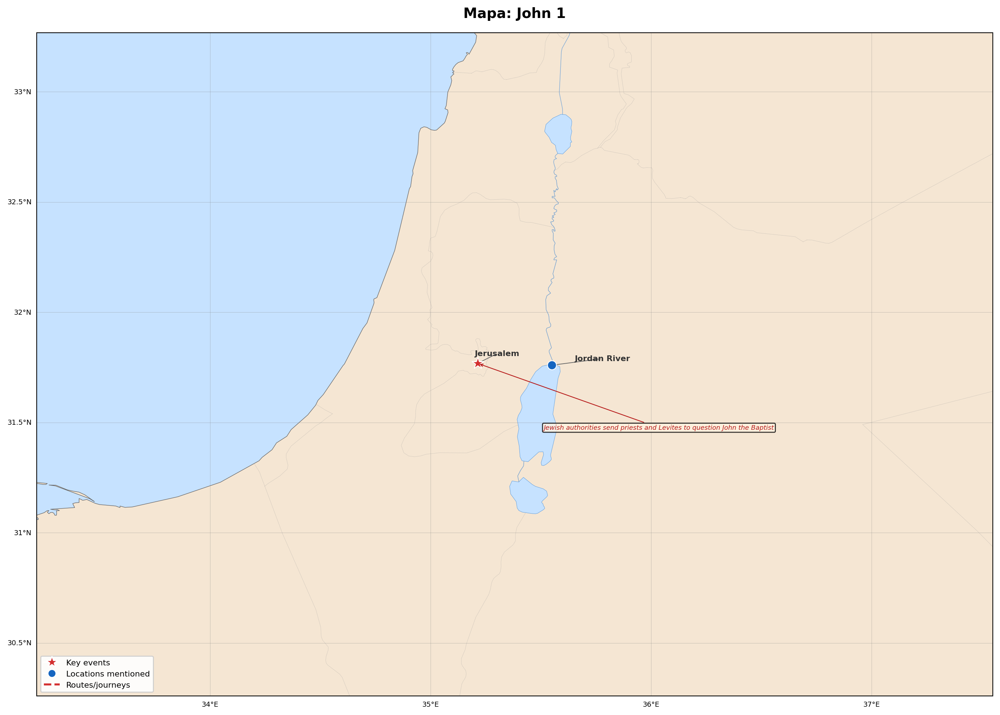

John 1
Estudio interactivo · RVR1909
51
Versículos
1201
Patrística
160
Refs. Cruzadas
4
Lugares
🗺️ Mapa Geográfico

Click para ampliar
📖 Texto
📊 Padres
🔗 Referencias Cruzadas
📅 Eventos
🗺️ Manuscritos — Mapa y Línea de Tiempo
×